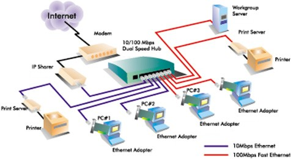

| Tipo | Definizioni | Immagini |
| Apparati Di Rete Aziendale | Servizi di accesso ottico, destinati principalmente alle utenze business (reti aziendali su scala geografica, servizi MAN e WAN privati, eccetera) e in misura molto minore alle utenze residenziali. |  |